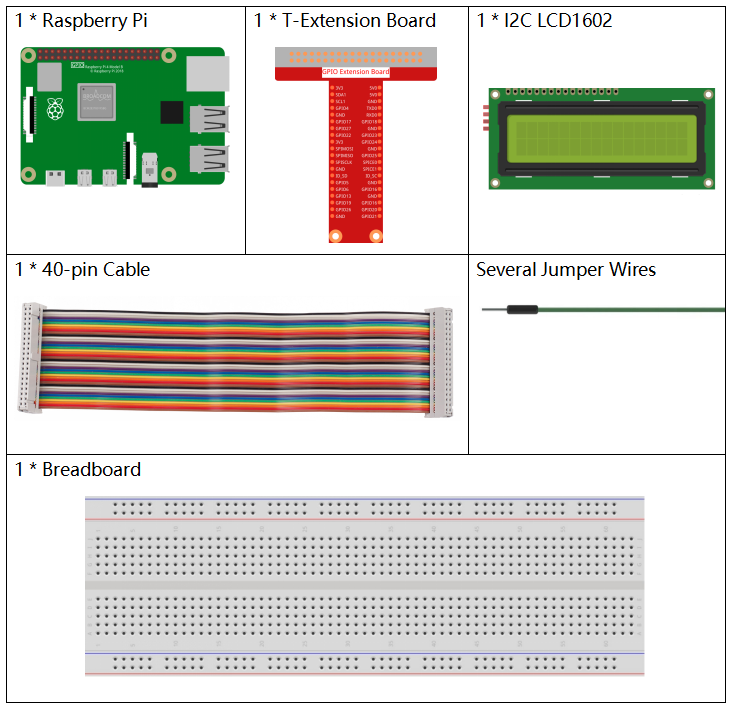

Nota
Ciao, benvenuto nella community di SunFounder Raspberry Pi & Arduino & ESP32 Enthusiasts su Facebook! Approfondisci Raspberry Pi, Arduino e ESP32 insieme ad altri appassionati.
Perché unirsi?
Supporto esperto: Risolvi i problemi post-vendita e le sfide tecniche con l’aiuto della nostra community e del nostro team.
Impara e condividi: Scambia suggerimenti e tutorial per migliorare le tue competenze.
Anteprime esclusive: Ottieni accesso anticipato a nuovi annunci di prodotti e anteprime.
Sconti speciali: Approfitta di sconti esclusivi sui nostri prodotti più recenti.
Promozioni e omaggi festivi: Partecipa a omaggi e promozioni in occasione delle festività.
üëâ Pronto a esplorare e creare con noi? Clicca [Qui] e unisciti oggi!
1.1.7 LCD1602 I2C
Introduzione
LCD1602 è un display a cristalli liquidi di tipo carattere, che può visualizzare 32 caratteri (16*2) contemporaneamente.
Componenti
Principio
LCD1602 I2C

GND: Terra
VCC: Alimentazione, 5V.
SDA: Linea dati seriale. Connettere al VCC tramite una resistenza di pull-up.
SCL: Linea di clock seriale. Connettere al VCC tramite una resistenza di pull-up.
Come è noto, sebbene gli LCD e altri display arricchiscano notevolmente l’interazione uomo-macchina, presentano un punto debole comune. Quando vengono collegati a un controller, occupano molti pin IO, riducendo le porte esterne disponibili e limitando altre funzioni del controller.
L’LCD1602 con modulo I2C è stato sviluppato per risolvere questo problema. Il modulo I2C ha un chip I2C PCF8574 integrato, che converte i dati seriali I2C in dati paralleli per il display LCD.
Indirizzo I2C
L’indirizzo predefinito è generalmente 0x27, ma in alcuni casi potrebbe essere 0x3F.
Prendendo come esempio l’indirizzo predefinito 0x27, l’indirizzo del dispositivo può essere modificato cortocircuitando i pad A0/A1/A2; nello stato predefinito, A0/A1/A2 è impostato su 1, mentre cortocircuitando il pad, A0/A1/A2 è impostato su 0.

Retroilluminazione/Contrasto
La retroilluminazione può essere abilitata tramite un ponticello; rimuovere il ponticello per disattivare la retroilluminazione. Il potenziometro blu sul retro serve per regolare il contrasto (il rapporto tra la luminosità del bianco più chiaro e del nero più scuro).

Ponticello: La retroilluminazione può essere abilitata tramite questo ponticello; rimuovere il ponticello per disabilitare la retroilluminazione.
Potenziometro: Viene utilizzato per regolare il contrasto (la nitidezza del testo visualizzato); aumenta in senso orario e diminuisce in senso antiorario.
Schema del Circuito
T-Board Name |
physical |
SDA1 |
Pin 3 |
SCL1 |
Pin 5 |
Procedura Sperimentale
Passo 1: Costruisci il circuito.

Passo 2: Configura I2C (vedi Configurazione I2C. Se hai già configurato I2C, salta questo passaggio.)
Per Utenti del Linguaggio C
Passo 3: Cambia la directory.
cd ~/davinci-kit-for-raspberry-pi/c/1.1.7/
Passo 4: Compila.
gcc 1.1.7_Lcd1602.c -lwiringPi
Passo 5: Esegui.
sudo ./a.out
Dopo l’esecuzione del codice, vedrai visualizzati sul display LCD i messaggi "Greetings" e "From SunFounder".
Nota
Se appare un errore
wiringPi.h: No such file or directory, fai riferimento a Installazione e Verifica di WiringPi.Se ricevi l’errore
Unable to open I2C device: No such file or directory, devi fare riferimento a Configurazione I2C per abilitare l’I2C e controllare se i collegamenti sono corretti.Se il codice e i collegamenti sono corretti, ma l’LCD non visualizza ancora contenuti, puoi ruotare il potenziometro sul retro per aumentare il contrasto.
Codice
#include <stdio.h>
#include <wiringPi.h>
#include <wiringPiI2C.h>
#include <string.h>
int LCDAddr = 0x27;
int BLEN = 1;
int fd;
void write_word(int data){
int temp = data;
if ( BLEN == 1 )
temp |= 0x08;
else
temp &= 0xF7;
wiringPiI2CWrite(fd, temp);
}
void send_command(int comm){
int buf;
// Invia prima i bit da 7 a 4
buf = comm & 0xF0;
buf |= 0x04; // RS = 0, RW = 0, EN = 1
write_word(buf);
delay(2);
buf &= 0xFB; // Imposta EN = 0
write_word(buf);
// Invia i bit da 3 a 0 successivamente
buf = (comm & 0x0F) << 4;
buf |= 0x04; // RS = 0, RW = 0, EN = 1
write_word(buf);
delay(2);
buf &= 0xFB; // Imposta EN = 0
write_word(buf);
}
void send_data(int data){
int buf;
// Invia prima i bit da 7 a 4
buf = data & 0xF0;
buf |= 0x05; // RS = 1, RW = 0, EN = 1
write_word(buf);
delay(2);
buf &= 0xFB; // Imposta EN = 0
write_word(buf);
// Invia i bit da 3 a 0 successivamente
buf = (data & 0x0F) << 4;
buf |= 0x05; // RS = 1, RW = 0, EN = 1
write_word(buf);
delay(2);
buf &= 0xFB; // Imposta EN = 0
write_word(buf);
}
void init(){
send_command(0x33); // Inizializzazione alla modalità 8-linee
delay(5);
send_command(0x32); // Inizializzazione alla modalità 4-linee
delay(5);
send_command(0x28); // 2 Linee & punti 5*7
delay(5);
send_command(0x0C); // Attiva display senza cursore
delay(5);
send_command(0x01); // Pulisci schermo
wiringPiI2CWrite(fd, 0x08);
}
void clear(){
send_command(0x01); // Pulisci schermo
}
void write(int x, int y, char data[]){
int addr, i;
int tmp;
if (x < 0) x = 0;
if (x > 15) x = 15;
if (y < 0) y = 0;
if (y > 1) y = 1;
// Sposta il cursore
addr = 0x80 + 0x40 * y + x;
send_command(addr);
tmp = strlen(data);
for (i = 0; i < tmp; i++){
send_data(data[i]);
}
}
void main(){
fd = wiringPiI2CSetup(LCDAddr);
init();
write(0, 0, "Greetings!");
write(1, 1, "From SunFounder");
}
Spiegazione del Codice
void write_word(int data){……}
void send_command(int comm){……}
void send_data(int data){……}
void init(){……}
void clear(){……}
void write(int x, int y, char data[]){……}
Queste funzioni servono per controllare il codice open source dell’I2C LCD1602. Consentono di utilizzare facilmente l’I2C LCD1602. Tra queste funzioni, init() è utilizzata per l’inizializzazione, clear() per pulire lo schermo, write() per scrivere ciò che verrà visualizzato, mentre le altre funzioni supportano queste operazioni.
fd = wiringPiI2CSetup(LCDAddr);
Questa funzione inizializza il sistema I2C con il dispositivo specificato. Il prototipo della funzione è:
int wiringPiI2CSetup(int devId);
Il parametro devId è l’indirizzo del dispositivo I2C, ottenibile tramite il comando i2cdetect (vedi Appendice); l’indirizzo devId dell’I2C LCD1602 è generalmente 0x27.
void write(int x, int y, char data[]){}
In questa funzione, data[] è la stringa di caratteri da stampare sull’LCD, e i parametri x e y determinano la posizione di stampa (la riga y+1, colonna x+1 è il punto iniziale dei caratteri da visualizzare).
Per Utenti del Linguaggio Python
Passo 3: Cambia la directory.
cd ~/davinci-kit-for-raspberry-pi/python/
Passo 4: Esegui.
sudo python3 1.1.7_Lcd1602.py
Dopo l’esecuzione del codice, vedrai «Greetings» e «From SunFounder» visualizzati sul display LCD.
Nota
Se ricevi l’errore
FileNotFoundError: [Errno 2] No such file or directory: '/dev/i2c-1', devi fare riferimento a Configurazione I2C per abilitare l’I2C.Se ricevi l’errore
ModuleNotFoundError: No module named 'smbus2', eseguisudo pip3 install smbus2.Se appare l’errore
OSError: [Errno 121] Remote I/O, significa che il modulo è cablato in modo errato o è danneggiato.Puoi provare a regolare il potenziometro sul retro se il codice e il cablaggio sono corretti, ma l’LCD non mostra ancora il contenuto.
Codice
Nota
Puoi Modificare/Reimpostare/Copiare/Eseguire/Interrompere il codice seguente. Ma prima, devi andare al percorso del codice sorgente come davinci-kit-for-raspberry-pi/python.
import LCD1602
import time
def setup():
LCD1602.init(0x27, 1) # init(slave address, background light)
LCD1602.write(0, 0, 'Greetings!!')
LCD1602.write(1, 1, 'from SunFounder')
time.sleep(2)
def destroy():
LCD1602.clear()
if __name__ == "__main__":
try:
setup()
except KeyboardInterrupt:
destroy()
Spiegazione del Codice
import LCD1602
Questo file è un codice open source per controllare l’I2C LCD1602. Ci permette di utilizzare facilmente l’I2C LCD1602.
LCD1602.init(0x27, 1)
La funzione inizializza il sistema I2C con il dispositivo designato. Il primo parametro è l’indirizzo del dispositivo I2C, che può essere rilevato tramite il comando i2cdetect (vedi Appendice per i dettagli). L’indirizzo dell’I2C LCD1602 è generalmente 0x27.
LCD1602.write(0, 0, 'Greetings!!')
In questa funzione, “Greetings!!” è il testo da stampare sulla riga 1, colonna 1 dell’LCD.
Ora puoi vedere «Greetings! From SunFounder» visualizzato sul display LCD.